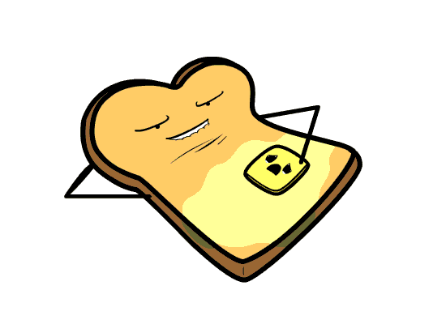

Видимо банан, который вы съели, был магическим, потому вас перенесло в цветастый мир бананов и вы сами стали живым бананом.
Поздравляю!
2016 Patamen©
Создатели:
Оводов Даниил
Особые благодарности:
Patamen - За названия материка, городов,трактиров и персонажей Злой бог - за большую часть картинок и музыку, предоставленную в квесте и вам, за то что прошли квест
Что было дальше?